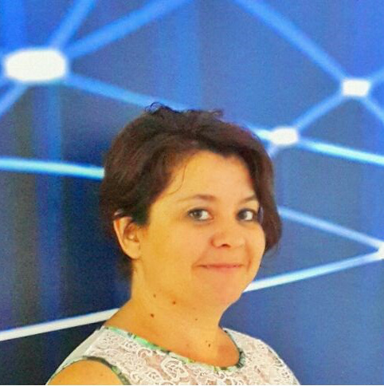

<div class="container">
    <div class="row">
        <div id="speaker-detail" class="col-lg-8 col-lg-offset-3">
            <div class="row">
                <button title="Kapat (Esc)" type="button" class="mfp-close">×</button>
                <div class="col-md-4 col-lg-4">
                    <br />
                </div>
                <div class="col-md-8 col-lg-8">
                    <h2>Aysu Seven Arslan - IBM</h2>
                    <h3>İş Geliştirme Sorumlusu</h3>
                    <p>Aysu (Seven) Arslan, İstanbul Özel Alman Lisesi'nden sonra İTÜ Elektronik ve Haberleşme Mühendisliği'ni bitirmiş, aynı okulda yüksek lisansını tamamlamıştır. Tezi, yapay sinir ağları ile hastalıklı doku tanıma dır. İş hayatına aynı üniversitede asistan olarak başlayan Aysu Arslan, 1994 yılından itibaren IBM Türkiye'ye girmiştir. IBM Türkiye'de değişik görevlerde bulunan Aysu Arslan, 2016 başından itibaren, IBM Bulut İş Birimi'nde İş Geliştirme'den sorumludur.</p> </div> </div>
        </div>
    </div>
</div>